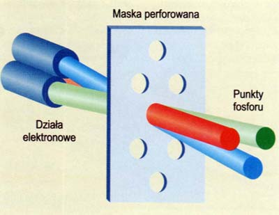
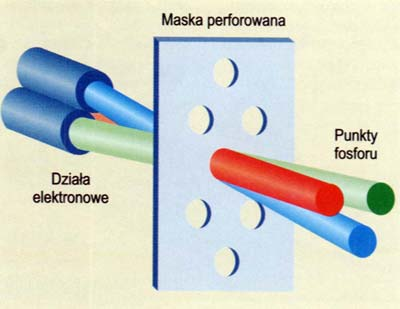

Urządzenie służące do drukowania na papierze tekstu lub grafiki zapisanej na dysku; najbardziej rozpowszechnione są drukarki igłowe, atramentowe i laserowe; drukarki igłowe są niezwykle korzystane, jeśli chodzi o cenę, lecz nie pozwalają uzyskać wydruku tak wysokiej jakości, jaką gwarantują drukarki atramentowe i laserowe; drukarki atramentowe z kolei są dość atrakcyjne cenowo, a poza tym oferują możliwość drukowania również w kolorze; jednak najlepsza jakość uzyskiwana jest przy użyciu drukarek laserowych.
Urządzenie służące do kreślenia rysunkó lub grafiki w formacie do A1 włącznie; ploter jest wyposażony w pisak (w przypadku ploterów kolorowych jest ich kilka), który porusza się po osiach x i y zgodnie z tym, jakie informacje otrzymuje od komputeral silnymi konkurentami dla ploterów są nowoczesne kolorowe drukarki atramentowe i laserowe.
Urządzenie elektorniczne wyposażone w ekran, na którym - w zależności od rodzaju doprowadzonego sygnały elektrycznego - uzyskuje się ruchome obrazy, rysunki, wykresy, zestawienia, wyniki obliczeń i pomiarów, dane w postaci znaków i liter; ekran monitora stanowi najczęściej płaska część lampy kineskopowej (kineskop) lub płyta wyświetlacza ciekłokrystalicznego;
Typy monitorów:
 


Parametry monitora: